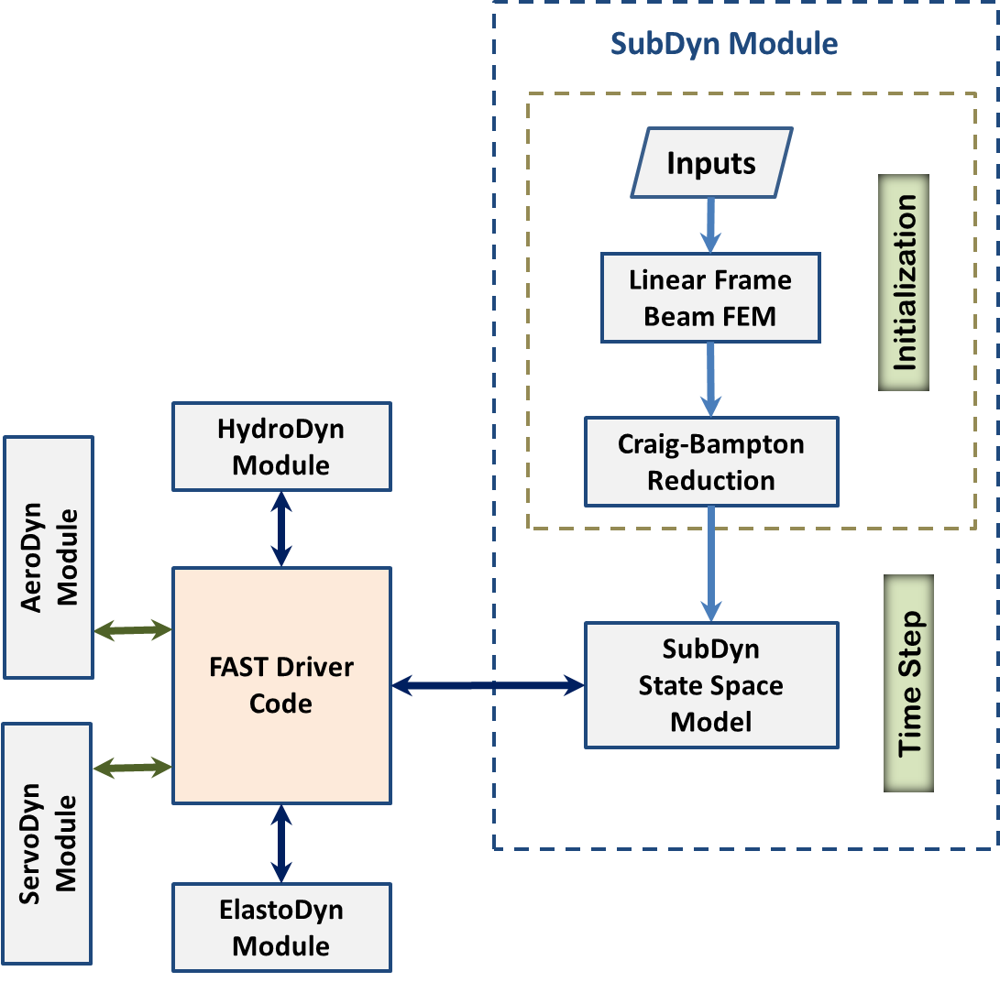
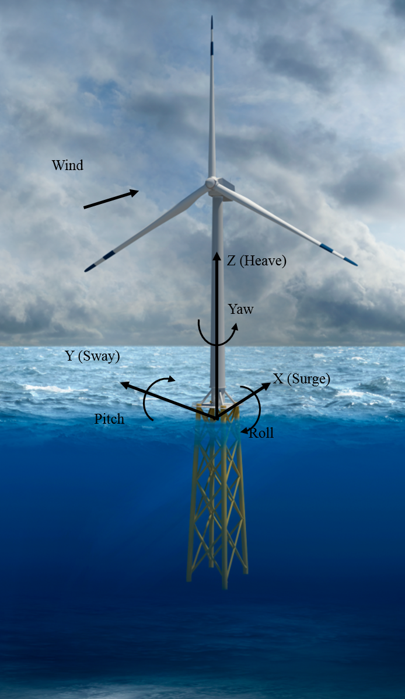
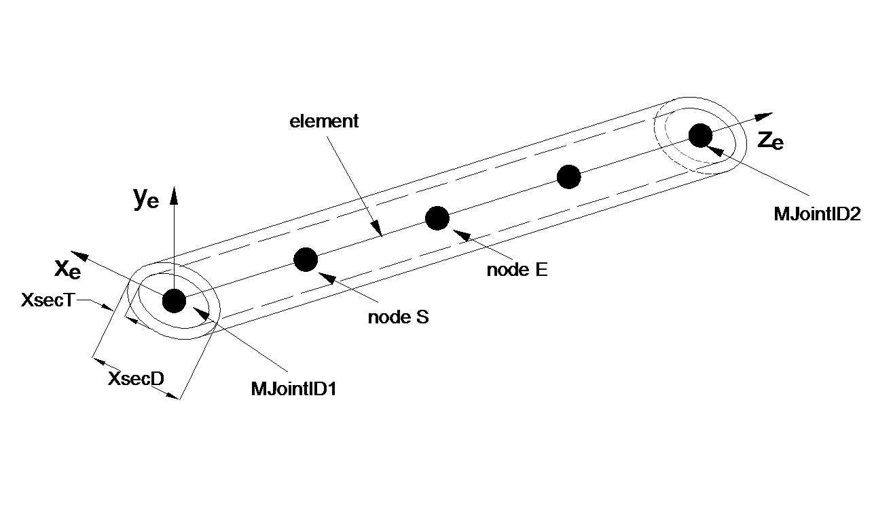
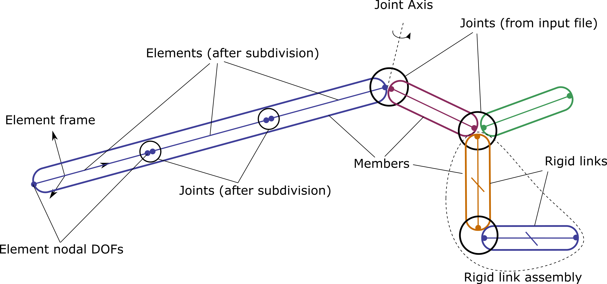
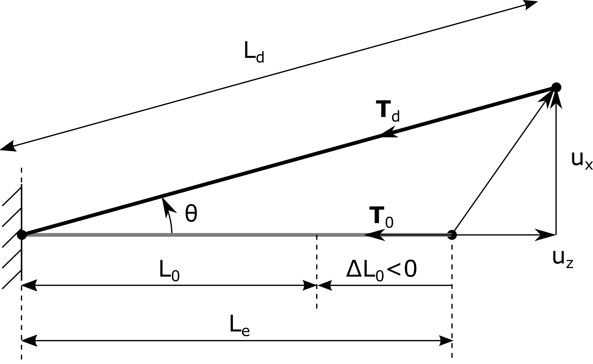
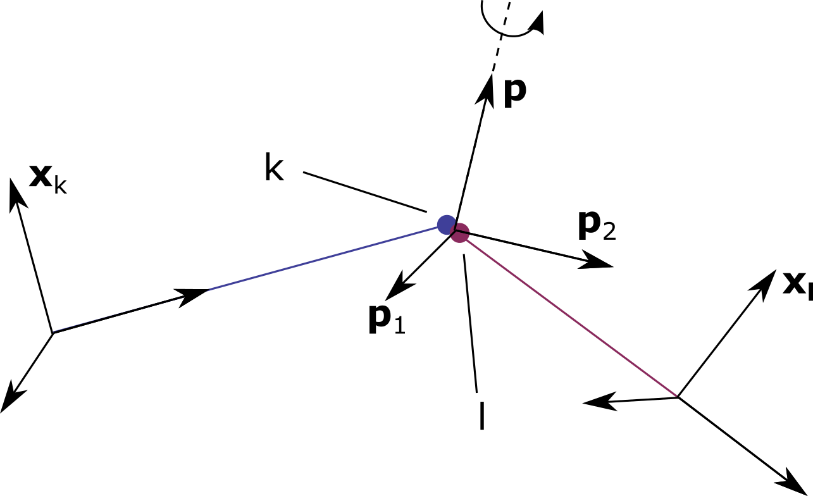
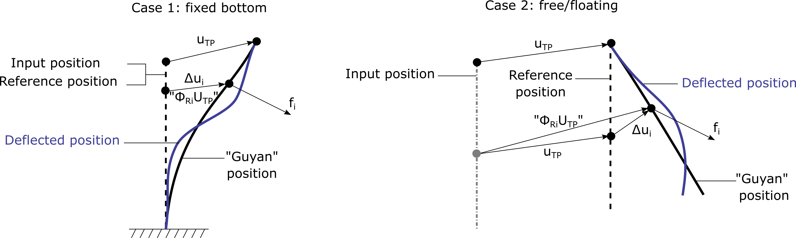

4.8.6. SubDyn 이론
4.8.6.1. 개요
이 섹션에서는 SubDyn 모듈 뒤에 있는 이론에 중점을 둡니다.
SubDyn는 (1) 선형 프레임 유한 요소 모델(LFEM), (2) 정적 개선 방법(SIM)과 함께 Craig-Bampton(C-B) 방법을 통한 동적 시스템 감소라는 두 가지 주요 엔지니어링 접근 방식을 사용하여 정확한 솔루션을 얻는 데 필요한 모드 수를 크게 줄입니다.
해상 풍력 하부구조 모델에는 재료 비선형성, 굽힘으로 인한 축 단축, 큰 변위 등을 포함하여 많은 비선형성이 존재합니다. 대부분의 해양 다중 부재 지지 구조물은 강철을 사용하도록 설계되었으며 최대 응력은 재료의 항복 강도보다 낮도록 설계되었기 때문에 재료의 비선형성은 여기에서 고려되지 않습니다. [DSRJ13] 풍력 터빈 하부 구조를 분석할 때 선형 유한 요소 방법이 적합하다는 것을 입증합니다. 이 작업에서는 기본 형상, 하중 경로, 크기, 지지 타워 및 터빈 질량이 다양한 여러 풍력 터빈 구성을 비선형 및 선형 모델을 사용하여 극한 하중 하에서 분석했습니다. 결과는 비선형 거동이 주로 단일 타워 응답에 의해 발생하고 다중 부재 지지 구조에 거의 영향을 미치지 않음을 보여주었습니다. 따라서 하부구조에 대한 LFEM 모델은 풍력 터빈 하부구조에 적합한 것으로 간주됩니다. LFEM는 일정하거나 세로로 가늘어지는 단면의 Euler-Bernoulli 및 Timoshenko 빔 요소를 포함한 다양한 요소 유형을 수용할 수 있습니다(Timoshenko 빔 요소는 전단 변형을 설명하며 프레임 내에서 사용할 수 있는 낮은 종횡비 빔을 표현하고 프레임 내에서 하중을 전달하는 데 더 적합합니다).
다수의 DOFs(~ \({10^3}\)) 일반적인 다중 멤버 구조의 표준 유한 요소 분석과 관련된 것은 풍력 터빈 시스템 동적 시뮬레이션 중에 계산 효율성을 방해할 수 있습니다. 결과적으로 전체 시스템 응답에서 높은 수준의 충실도를 유지하면서 처리 시간을 단축하기 위해 C-B 시스템 감소가 구현되었습니다. C-B 감소는 하부 구조 유한 요소 모델을 구조의 기본 저주파 응답 모드를 유지하는 축소된 DOF 모델로 재특성화하는 데 사용됩니다. SubDyn 초기화 단계에서는 대규모 하부 구조의 물리적인 DOFs(변위)가 소수의 모달 DOFs 및 인터페이스(경계) DOFs로 축소되고, 각 시간 단계 동안 이러한 DOFs의 운동 방정식만 풀면 됩니다. SubDyn는 모달 DOFs에 대한 운동 방정식만 풀고 인터페이스(경계) DOFs의 운동은 SubDyn를 독립형 모드에서 실행할 때 규정되거나 SubDyn가 FAST에 결합될 때 ElastoDyn의 운동 방정식을 통해 해결됩니다.
그러나 소수의 DOFs만 유지하면 중력 및 부력으로 인해 발생하는 정적 하중 효과를 포착하는 데 중요한 축 모드(일반적으로 매우 높은 주파수)가 제외될 수 있습니다. 이 문제를 완화하기 위해 소위 SIM가 구현되었습니다. SIM는 각 시간 단계에서 두 가지 정적 솔루션을 계산합니다. 하나는 전체 시스템 강성 매트릭스를 기반으로 하고 다른 하나는 C-B 감소 강성 매트릭스를 기반으로 합니다. 각 시간 단계에서 시간에 따라 변하는 C-B 기반 동적 솔루션은 두 정적 솔루션 간의 차이에 중첩됩니다. 이는 동적 솔루션 내에 직접 포함되지 않은 모드의 기여도를 준정적으로 설명하는 것과 같습니다.
SubDyn에서 하위 구조는 하단 노드(일반적으로 해저)에서 선형 스프링형 요소를 통해 고정되거나 연결되고 하위 구조 상단 노드(인터페이스 노드)에서 TP에 견고하게 연결된 것으로 간주됩니다. 사용자는 토양-말뚝 상호 작용을 설명하기 위해 각 하단 노드에 대해 6x6, 등가 강성 및 질량 매트릭스를 제공할 수 있습니다. 이 문서의 다른 섹션에 설명된 대로 입력 파일은 하부 구조 형상, 재료 특성 및 제약 조건을 정의합니다. 사용자는 다음을 정의할 수 있습니다: 요소 유형; 완전 유한 요소 모드 또는 C-B 감소; C-B 감소에서 유지되는 모드 수; 모드 감쇠 계수; SIM를 활용할지 여부; 각 멤버의 요소 수입니다.
다음 섹션에서는 FAST 프레임워크 내 SubDyn 통합, 모듈에 사용되는 주요 좌표계, LFEM, C-B 감소 및 SIM와 관련된 이론에 대해 설명합니다. 시간 영역 시뮬레이션에 사용되는 상태공간 공식도 제시됩니다. 마지막 섹션에서는 염기 반응 계산 계산에 대해 설명합니다. 자세한 내용은 다음을 참조하세요. [SDRJ13].
4.8.6.2. FAST 모듈화 프레임워크와 통합
새로운 모듈화 프레임워크 기반 [JJo13], FAST는 공기 역학 모듈, 유체 역학 모듈, 제어 및 전기 시스템(서보) 모듈, 구조 역학(탄성) 모듈을 결합하여 시간 영역에서 육상 기반 및 해상 풍력 터빈의 결합된 비선형 공기-수력-서보-탄성 해석을 가능하게 합니다. 그림 4.38 FAST 모듈화 프레임워크 내 SubDyn 모듈의 기본 레이아웃을 보여줍니다.


그림 4.38 모듈화 프레임워크 내의 SubDyn 레이아웃
기존의 느슨하게 결합된 시간 통합 방식에서는 글루 코드가 각 시간 단계마다 데이터를 전송합니다. 이러한 데이터에는 유체 역학 하중, 하부 구조 응답, TP로 전달되는 하중, SubDyn, HydroDyn 및 ElastoDyn 간의 TP 응답이 포함됩니다. 인터페이스 노드에서 TP 변위, 회전, 속도 및 가속도는 ElastoDyn에서 SubDyn로 입력되고, TP의 반력은 ElastoDyn로 입력되는 SubDyn의 출력입니다. SubDyn는 또한 SubDyn에 대한 입력이 되는 유체 역학적 하중을 계산하기 위해 HydroDyn에 대한 입력에 대한 하부 구조 변위, 속도 및 가속도를 출력합니다. 또한 SubDyn는 사용자의 요청에 따라 부재력을 계산할 수 있습니다. 이 체계 내에서 SubDyn는 상태를 추적하고 자체 솔버를 통해 방정식을 통합합니다.
긴밀하게 결합된 시간 통합 방식(아직 구현되지 않음)에서 SubDyn는 자체 방정식을 설정하지만 해당 상태와 다른 모듈의 상태는 모든 모듈에 공통된 글루 코드 내의 솔버에 의해 추적되고 통합됩니다.
SubDyn는 경계의 물리적 DOFs와 모든 내부 동작을 나타내는 모달 DOFs를 사용하여 하부 구조 시스템의 운동 방정식을 형성하는 상태공간 공식으로 구현됩니다. 각 시간 단계에서 드라이버 코드를 통해 모듈 간에 하중과 모션이 교환됩니다. 모달 응답은 SubDyn의 상태공간 모델 내에서 계산됩니다. 다음 시간 단계 응답은 느슨한 결합을 위한 SubDyn 적분기와 긴밀한 결합을 위한 전역 시스템 적분기에 의해 계산됩니다.
4.8.6.3. 좌표계


그림 4.39 전역(하부 구조와 일치) 좌표계. 또한 TP 기준점과 연관된 DOFs도 표시됩니다.
4.8.6.3.1. 전역 및 하위 구조 좌표계: (X, Y, Z) 또는 (\({X_{SS}, Y_{SS}, Z_{SS}}\)) (그림 4.39)
전역 축은 단위 벡터로 표시됩니다. \({\hat{I}, \hat{J}}\), 및 \({\hat{K}}\).
원점은 편향되지 않은 타워 중심선과 해양 시스템의 경우 평균 해수면(MSL) 또는 육상 기반 시스템의 경우 지면 수준으로 식별되는 수평면 사이의 교차점에 설정됩니다.
긍정적인 Z (\({Z_{SS}}\)) 축은 수직이고 위를 향하고 있으며 중력과 반대입니다.
긍정적인 X (\({X_{SS}}\)) 축은 공칭(0도) 바람 및 파도 전파 방향을 따릅니다.
해당 Y (\({Y_{SS}}\)) 축은 가로 방향이며 오른쪽 직교 좌표계(공칭 풍하 방향을 볼 때 왼쪽을 향함)를 가정하여 찾을 수 있습니다.
4.8.6.3.2. 멤버 또는 요소 로컬 좌표계(\({x_e, y_e, z_e}\)) (그림 4.40)
축은 단위 벡터로 표현됩니다. \({\hat{i}_e, \hat{j}_e, \hat{k}_e}\).
원점은 시작 절점(S,MJointID1)에서 단면의 전단 중심으로 설정됩니다.
지역 \(z_{e}\) 축은 부재의 탄성축을 따르며 시작 절점(S)에서 끝 절점(E,MJointID2)을 향합니다. 노드는 시작 조인트에서 끝 조인트로 향하는 부재 주축을 따라 정렬됩니다(사용자의 입력 정의에 따라).
지역 \(x_{e}\) 축은 전역과 평행합니다. \(\text{XY}\) 평면이며 양수, 180보다 작거나 같은 방향으로 지정됩니다. \(^\circ\) 그것에 대해 회전하면 지역을 가져올 것입니다 \(z_{e}\) 전역에 평행한 축 Z 중심선.
지역 \(y_{e}\) 축은 오른손 직교 좌표계를 가정하여 찾을 수 있습니다.


그림 4.40 요소 좌표계. 스케치된 멤버에는 4개의 요소가 포함되어 있으며 두 번째 요소는 노드 S와 E로 호출됩니다.
4.8.6.3.3. 로컬에서 글로벌로의 전환
로컬 좌표계에서 전역 좌표계로의 변환은 다음 방정식으로 표현될 수 있습니다.
(4.109)\[\begin{split}\begin{bmatrix} \Delta X \\ \Delta Y \\ \Delta Z \end{bmatrix} = [ \mathbf{D_c} ] \begin{bmatrix} \Delta x_e \\ \Delta y_e \\ \Delta z_e \end{bmatrix}\end{split}\]
여기서 \(\begin{bmatrix} \Delta x_e \\ \Delta y_e \\ \Delta z_e \end{bmatrix}\) 로컬 좌표계의 일반 벡터입니다. \(\begin{bmatrix} \Delta X \\ \Delta Y \\ \Delta Z \end{bmatrix}\) 동일한 벡터이지만 전역 좌표계에 있습니다. 그리고 \([ \mathbf{D_c} ]\) 는 부재 축의 방향 코사인 행렬이며 다음과 같이 얻을 수 있습니다.
(4.110)\[\begin{split}[ \mathbf{D_c} ] = \begin{bmatrix} \frac{Y_E-Y_S}{L_{exy}} & \frac{ \left ( X_E-X_S \right) \left ( Z_E-Z_S \right)}{L_{exy} L_{e}} & \frac{X_E-X_S}{L_{e}} \\ \frac{-X_E+X_S}{L_{exy}} & \frac{ \left ( Y_E-Y_S \right) \left ( Z_E-Z_S \right)}{L_{exy} L_{e}} & \frac{Y_E-Y_S}{L_{e}} \\ 0 & \frac{ -L_{exy} }{L_{e}} & \frac{Z_E-Z_S}{L_{e}} \end{bmatrix}\end{split}\]
어디 \({\left ( X_s,Y_s,Z_s \right )}\) 및 \({\left ( X_E,Y_E,Z_E \right )}\) 전역 좌표계에서 부재(또는 관심 요소의 노드)의 시작 및 끝 조인트입니다. \({L_{exy}= \sqrt{ \left ( X_E-X_S \right )^2 + \left ( Y_E-Y_S \right )^2}}\) 및 \({L_{e}= \sqrt{ \left ( X_E-X_S \right )^2 + \left ( Y_E-Y_S \right )^2 + \left ( Z_E-Z_S \right )^2}}\).
다음의 경우 \({X_E = X_S}\) 및 \({Z_E = Z_S}\), \({[ \mathbf{D_c} ]}\) 행렬은 다음과 같이 찾을 수 있습니다.
만약에 \({Z_E >= Z_S}\) 그러면
(4.111)\[\begin{split}[ \mathbf{D_c} ] = \begin{bmatrix} 1 & 0 & 0 \\ 0 & 1 & 0 \\ 0 & 0 & 1 \end{bmatrix}\end{split}\]
또 다른
(4.112)\[\begin{split}[ \mathbf{D_c} ] = \begin{bmatrix} 1 & 0 & 0 \\ 0 & -1 & 0 \\ 0 & 0 & -1 \end{bmatrix}\end{split}\]
현재 SubDyn 릴리스에서는 각 멤버에 대한 이러한 방향 코사인 행렬의 전치(전역에서 로컬로)가 요약 파일에 반환됩니다. 부재 단면의 원형 모양을 고려할 때 방향 코사인 행렬은 부재 하중 검증에 거의 중요하지 않습니다. 표준에 따라 조인트를 확인하려면(예: [ISO07] [API14] ) 그러나 굽힘 모멘트는 평면 내 및 평면 외부 구성요소로 분해되어야 합니다. 여기서 평면은 한 쌍의 버팀대(X-조인트의 경우) 또는 쌍의 버팀대와 다리(K-조인트의 경우)로 정의됩니다. 따라서 국부 전단력과 굽힘 모멘트를 적절하게 조작하고 변환하기 위해 관심 있는 구성원의 방향 코사인을 쉽게 사용할 수 있도록 하는 것이 중요합니다.
향후 릴리스에서 원형 이외의 부재 단면이 허용되는 경우 사용자는 전역 참조 프레임을 기준으로 부재 주축의 최종 방향을 나타내기 위해 코사인 행렬을 입력해야 합니다.
4.8.6.4. 유한 요소 모델 - 요소 및 제약 조건
4.8.6.4.1. 정의
수치 그림 4.41 사용된 정의 중 일부를 설명하는 데 사용됩니다. 하부 구조의 모델은 다양한 멤버로 구성되어 있다고 가정됩니다. 멤버는 두 개의 조인트로 구분됩니다. 조인트는 편향되지 않은 구조물의 한 점의 좌표와 유형(JointType). 접합 유형은 이 접합에 연결된 모든 부재의 경계 조건 또는 구속조건을 정의합니다. 다음 조인트가 지원됩니다:
캔틸레버 조인트(JointType=1)
유니버설 조인트(JointType=2)
핀조인트(JointType=3)
볼조인트(JointType=4)
구성원은 다음 네 가지 유형 중 하나입니다.
빔(MType=1), 오일러-베르누이(FEMMod=1) 또는 티모셴코(FEMMod=3)
프리텐션 케이블(MType=2)
강체링크(MType=3)
스프링 요소(MType=5)
모델의 정확도를 높이기 위해 빔 부재를 여러 요소로 분할할 수 있습니다(입력 매개변수 사용). NDiv). 다른 유형의 멤버(리지드 링크, 프리텐션 케이블 및 스프링)는 분할되지 않습니다. 이 문서에서는 용어 요소 빔 부재의 하위 분할 또는 빔 이외의 다른 유형의 부재(리지드 링크, 프리텐션 케이블 또는 스프링)를 의미합니다. 용어 관절 부재의 끝부분을 정의하는 지점을 나타냅니다. 일부 접합은 입력 파일에 정의되어 있고 다른 접합은 빔 부재의 세분화에서 발생합니다. 요소의 끝점을 노드(Node)라고 하며, 각 노드는 구현된 요소에 대해 6자유도(DOF)로 구성됩니다. 현재 구현에서는 조인트와 요소의 노드 사이 또는 연결된 요소의 노드 사이에 기하학적 오프셋이 가정되지 않습니다.


그림 4.41 부재, 요소, 조인트, 노드 및 강체 어셈블리의 정의.
4.8.6.4.2. FEM 프로세스 - 요소부터 시스템 매트릭스까지
시스템의 FE 표현을 얻는 프로세스(초기화 시 수행됨)는 다음과 같습니다.
요소: 각 요소의 질량 및 강성 행렬은 방향성 코사인 행렬을 사용하여 계산되고 전역 좌표로 변환됩니다.
어셈블리: 요소 행렬이 전체 시스템 행렬에 삽입됩니다. 캔틸레버 조인트의 DOFs는 서로 매핑됩니다. 캔틸레버 조인트와 다른 조인트로 연결된 노드의 병진 DOFs는 서로 매핑되지만 각 개별 노드의 회전 DOFs는 이 시스템에 유지됩니다. 이 전체 시스템의 자유도 벡터가 표시됩니다. \(\boldsymbol{x}\)
제약 조건 제거: 조인트와 강성 링크에 의해 도입된 제약 조건을 적용하기 위해 직접 제거 기술이 사용됩니다. 제거는 매트릭스를 형성하는 것으로 구성됩니다. \(\boldsymbol{T}\) 자유도가 감소한 세트 \(\boldsymbol{\tilde{x}}\) 그렇게 \(\boldsymbol{x}=\boldsymbol{T} \boldsymbol{\tilde{x}}\).
CB-reduction: Craig-Bampton 감소 기술은 감소된 자유도 세트를 얻는 데 사용됩니다(인터페이스 DOFs 및 Craig-Bampton 모드).
경계 조건: 변위 경계 조건이 적용됩니다(예: 고정 바닥 기초의 경우).
섹션의 나머지 부분에서는 요소 매트릭스와 조인트 및 강체 링크에 의해 발생하는 제약 조건에 대해 중점적으로 설명합니다. Craig-Bampton 감소는 다음에 설명되어 있습니다. 섹션 4.8.6.5.
4.8.6.4.3. 자중 하중
자중으로 인한 하중은 변위되지 않은 구성을 기반으로 초기화 중에 미리 계산됩니다. 그러므로 하부 구조에 대한 변위가 작고 P-델타 효과도 작다고 가정합니다. "추가" 순간은 플래그 사용으로 설명될 수 있습니다. GuyanLoadCorrection, 섹션 참조 섹션 4.8.6.6.4. 테이퍼가 아닌 보 요소의 경우 끝 절점에 적용되는 중력으로 인한 집중 하중은 다음과 같습니다(전체 좌표계에서).
또한 집중 질량이 존재하는 경우(지정된 관절에서 사용자가 선택) 해당 기여는 전역을 따라 집중된 힘으로 포함됩니다. Z 관련 노드에서.
4.8.6.4.4. 빔 요소 공식
균일하고 테이퍼진 오일러-베르누이 빔 요소는 변위 기반이며 요소 간 변위 및 회전 연속성을 보장하는 3차 보간 기능을 사용합니다. 균일한 Timoshenko 빔 요소는 균일한 오일러-베르누이 요소에 전단 변형을 도입하여 파생되므로 변위는 3차 보간 함수로도 표현됩니다. 고전적인 Timoshenko 빔 이론에 따라 일반적인 2노드 요소 강성과 일관된 질량 행렬은 다음과 같이 작성할 수 있습니다(예를 들어, [PHEL09]):
행렬이 대칭인 경우와 \(A_z\) 요소 단면적입니다. \(J_x, J_y, J_z\) 는 단면의 주축에 대한 면적 2차 관성 모멘트입니다. \(L_e\) 시작 노드에서 끝 노드까지 변위되지 않은 요소의 길이입니다. \(\rho, E, \textrm{and}\quad G\) 각각 재료 밀도, 영 및 전단 계수입니다. \(K_{sx}, K_{sy}\) 는 아래와 같은 전단 보정 계수입니다(EB 공식을 선택한 경우 0으로 설정됨).
지역을 따라 전단 영역 x 및 y (주) 축은 다음과 같이 정의됩니다.
및
방정식. (4.118) 출신이다 [SKM13] 속이 빈 원형 단면의 경우 \(\mu\) 포아송 비를 나타냅니다.
전역 시스템 강성을 조립하기 전에(K) 및 질량(M) 행렬, 개인 \({[k_e]}\) 그리고 수학:{[m_e]} 다음을 통해 전역 좌표계로 수정됩니다. \({[ \mathbf{D_c} ]}\) 다음 방정식에 표시된 대로:
여기서 m 및 k 전역 좌표계의 요소 행렬입니다.
4.8.6.4.5. 프리텐션 케이블 요소 구성
FEM의 마스터 강성 방정식은 모든 변위도 사라지면 힘도 사라진다고 가정합니다. 즉, 힘과 변위 사이의 관계는 선형입니다. \(\boldsymbol{f}=\boldsymbol{K}\boldsymbol{u}\). 재료가 소위 초기 변형, 프리스트레스의 초기 응력을 받는 경우에는 이 가정이 적용되지 않습니다. 이러한 효과는 온도 변화와 장력(또는 적합하지 않은 제작)으로 인해 발생할 수 있습니다. 이러한 효과는 예를 들어 Felippa의 노트에서 논의됩니다. [Fel04].
초기 장력 케이블은 트러스 요소의 초기 신장을 가정하고 이 초기 신장이 세로 방향과 직교 방향 모두에서 가질 수 있는 복원력을 고려하여 모델링할 수 있습니다.
4.8.6.4.5.1. 유도
프리텐션 케이블이 \(z\)-방향이 고려됩니다. 유도를 단순화하기 위해 왼쪽 점은 고정된 것으로 가정하고 오른쪽 점만 편향됩니다. 표기법은 다음과 같습니다. 그림 4.42.


그림 4.42 초기 장력 케이블 방정식의 유도에 사용되는 표기법
프리텐션 이전 요소의 길이가 기록됩니다. \(L_0\)이고 축방향 강성은 다음과 같습니다. \(k=EA/L_0\). 이 평형 위치에서 케이블의 응력은 0입니다. 이 요소에 대한 사용자 입력은 다음과 같이 선택됩니다. 변위되지 않은 조인트 위치(예비 인장된 동안) \(\boldsymbol{x}_1\) 및 \(\boldsymbol{x}_2\), 신장 강성 \(EA\), 그리고 길이의 변화 \(\Delta L_0 = L_0-L_e\) (\(<0\)). 가식적인 힘 \(T_0\) 파생 입력입니다. 다음 수량을 정의합니다:
다양한 변수는 다음과 같이 입력의 함수로 정의됩니다.
케이블의 편향에 대한 자유도, \((u_x, u_z)\)는 평형 위치가 아닌 평형 위치에서 오프셋된 위치에서 측정되므로 요소의 예장 길이는 다음과 같습니다. \(L_e>L_0\). 케이블에 가해지는 스트레스 \(u_z=0\) 주목된다 \(\epsilon_0=(L_e-L_0)/L_0\), 또는 \(L_e=L_0(1+\epsilon_0)\). 케이블의 초기 장력은 다음과 같습니다. \(\boldsymbol{T}_0=-k(L_e-L_0)\,\boldsymbol{e}_z=- E A \epsilon_0\, \boldsymbol{e}_z\). 편향된 위치에서 케이블 길이는 다음과 같습니다.
여기서는 처짐이 요소 길이에 비해 작다고 가정합니다 \(L_e\), \(u_x\ll L_e\) 및 \(u_z\ll L_e\), 1차 항만 유지됩니다. 편향된 케이블의 장력은 다음과 같습니다. \(\boldsymbol{T}_d=-k(L_d-L_0) \boldsymbol{e}_r\) 여기서 방사형 벡터는 다음과 같이 편향된 케이블을 따른 벡터입니다.
장력의 구성 요소는 다음과 같습니다.
4.8.6.4.5.2. 초기 장력 케이블의 유한 요소 공식
이 케이블 요소에서는 이러한 자유도가 고려되지 않으므로 간결성을 위해 회전 자유도는 생략되었습니다. 의 선형 공식은 유한 요소의 두 노드에 적용되어 각 노드의 힘을 요소가 노드에 가하는 내부 힘으로 해석합니다. 이 규칙을 사용하여 초기 장력 케이블 요소는 요소 강성 행렬로 표현될 수 있습니다. \(\boldsymbol{K}_e\) 및 추가 노드 하중 벡터 \(\boldsymbol{f}_{e,0}\) 따라서 요소의 정적 평형 방정식은 다음과 같습니다 \(\boldsymbol{f}_e=\boldsymbol{K}_e\boldsymbol{u}+\boldsymbol{f}_{e,0}\), 와 함께:
위의 관계는 요소좌표계로 표현됩니다. 강성 행렬과 힘 벡터는 조립 과정에서 전역 시스템으로 전송됩니다. 삽입 \(\epsilon_0=0\) 위의 방정식에서 트러스 요소의 공식화로 이어집니다. 위의 선형 모델은 다음에만 유효합니다. \(L_d-L_0>0\), 즉 \((L_e-L_0+u_{z,2}-u_{z,1})>0\), 주어진 시간에 이 조건에 도달하지 않으면 구현이 중단되어야 합니다. 케이블의 질량 밀도가 양수인 경우 \(\rho\), 요소의 질량 행렬은 다음과 같이 지정됩니다.
함께 \(L_e\) 해당 이주되지 않은 요소의 길이(아님 \(L_0\)).
4.8.6.4.5.3. 제어된 초기 장력 케이블
컨트롤러는 각 시간 단계에서 케이블의 나머지 길이를 변경하여 케이블의 초기 장력 속성을 효과적으로 변경합니다. 주어진 시간에 케이블의 나머지 길이는 다음과 같습니다. \(L_r(t)=L_e + \Delta L\) (대신 \(L_0\)), 장력은 다음과 같습니다. \(T(t)\) (대신 \(T_0\)). 장력은 다음과 같이 주어진다:
~에 \(t=0\), 컨트롤러 동작이 없을 때 초기 장력과 길이는 다음과 같습니다.
수량 \(\Delta L\) 는 Restlength의 변화이며 다음과 같이 주어진다.
여기서 \(\Delta L_c\) 는 컨트롤러가 규정한 길이의 변화이며, \(\Delta L_0\) 초기 장력으로 인한 길이 변화입니다. 이 선택은 컨트롤러 입력이 명목상 0이 되도록 선택합니다. 요소 길이를 초과하는 케이블 연장(\(L_e\))는 SubDyn에서는 허용되지 않습니다. \(\Delta L\) 음수 값으로 제한됩니다(\(L_r=L_e+\Delta L <= L_e\)). 주어진 시간에 장력은 삽입하여 주어진다. (4.124) ~ 안으로 (4.122):
다음에서는 소개된 구현 및 근사치에 대한 세부 정보를 제공합니다. 케이블 요소의 "운동 방정식"은 다음과 같이 작성됩니다.
초기 장력이 일정한 경우( \(T_0\)), 추가 외부 하중을 무시하면 요소 힘은 다음과 같습니다.
여기서 \(\boldsymbol{f}_c(T_0)\) 및 \(\boldsymbol{K}_c(T_0)\) 에 주어진다 (4.121). 장력이 시간에 따라 변하는 경우(\(T=T(t)\)), 그러면 힘은 다음과 같습니다.
여기서 (4.126) 로 평가된다 \(\epsilon=\frac{T}{EA}\) 및 \(L=\frac{L_e}{1+\epsilon}\). 우리는 표현을 추구합니다 (4.126), 일정한 초기 장력 케이블의 방정식에 추가된 수정 항(예: (4.125), 와 함께 \(T(0)=T_0\)). 우리는 추가한다 \(\pm\boldsymbol{f}_e(t,T_0)\) 로, 다음으로 이어집니다:
여기서 \(\boldsymbol{f}_{c,\text{control}}\) 는 시간 변화를 설명하는 수정항입니다. \(T\):
이 방정식은 요소의 방향 코사인 행렬을 사용하여 전역 시스템으로 변환됩니다. 관련된 부분 \(\boldsymbol{u}\) 비선형성을 도입하며 현재는 무시됩니다. 를 사용하면 특정 요소에 대한 추가 제어력은 다음과 같습니다.
4.8.6.4.6. 회전 관절로 인한 제약 조건
에서 언급했듯이 섹션 4.8.6.4.2, 제약조건 설명은 직접 제거 기술을 통해 수행됩니다. 이 기술은 변환 행렬을 계산하여 구현됩니다. \(\boldsymbol{T}\) 이는 축소된 DOF 집합(제약조건 설명)과 전체 DOFs 집합 간의 관계를 제공합니다. 제약 조건이 없는 경우 이 행렬은 단위 행렬입니다. 이 섹션에서는 \(\boldsymbol{T}\) 회전 관절에 대해 매트릭스가 얻어집니다.
공식화 두 노드 사이의 조인트 \(k\) 및 \(l\) 여기에서 고려됩니다. 관절에 의해 발생하는 제약 조건을 고려하기 전에, \(12\) 자유도가 존재합니다. \((\boldsymbol{u}_k,\boldsymbol{\theta}_k,\boldsymbol{u}_l,\boldsymbol{\theta}_l)\). 제약 조건을 적용한 후 새로운 자유도 세트가 기록됩니다. \((\boldsymbol{\tilde{u}}_{kl}, \boldsymbol{\tilde{\theta}}_{kl})\). 각 조인트 유형별로 유지되는 자유도는 아래 표와 같습니다. 다름의 의미 \(\theta\)-변수는 후속 단락에서 명시적으로 설명됩니다.
조인트형 |
\(\boldsymbol{n}_\text{c}\) |
\(\boldsymbol{n}_\text{DOF}\) |
\(\boldsymbol{\tilde{u}}_{kl}\) |
\(\boldsymbol{\tilde{\theta}}_{kl}\) |
|---|---|---|---|---|
외팔보 |
\(6\) |
\(12 \to 6\) |
\(u_x,u_y,u_z\) |
\(\theta_x,\theta_y,\theta_k\) |
핀 |
\(5\) |
\(12 \to 7\) |
\(u_x,u_y,u_z\) |
\(\theta_1,\theta_2,\theta_3,\theta_4\) |
만능인 |
\(4\) |
\(12 \to 8\) |
\(u_x,u_y,u_z\) |
\(\theta_1,\theta_2,\theta_3,\theta_4,\theta_5\) |
공 |
\(3\) |
\(12 \to 9\) |
\(u_x,u_y,u_z\) |
\(\theta_{x,k},\theta_{y,k},\theta_{z,k},\theta_{x,l},\theta_{y,l},\theta_{z,l}\) |
고려된 모든 관절에 대해 두 노드의 병진 DOF는 동일하게 만들어지며 이는 공식적으로 다음과 같이 표현될 수 있습니다.
이 관계는 모든 관절에 대해 동일하므로 조립 단계에서 자유도 간의 관계를 고려합니다. 따라서 각 관절의 제약 조건은 다음 형식으로 표현됩니다.
캔틸레버 조인트 두 요소 사이의 캔틸레버 접합의 경우 감소는 다음과 같습니다.
이 관계는 조립 프로세스 중에 직접 처리되며 다음으로 쉽게 확장됩니다. \(n\) 강요.
볼/구형 조인트 두 요소 사이의 구형 접합의 경우 감소는 다음과 같습니다.
을 위한 \(n\) 강요 \([e_1,\cdots, e_n]\) 볼 조인트로 연결됨(제약 \(c\)) 관계는 다음과 같이 확장됩니다.
핀/회전 조인트 핀 조인트는 모멘트가 전달되지 않는 방향이 특징입니다. 이 방향을 나타내는 단위 벡터가 표시됩니다. \(\boldsymbol{\hat{p}}\). 두 개의 직교 벡터 \(\boldsymbol{p}_1\) 및 \(\boldsymbol{p}_2\) 그런 다음 정의되어 직교 기본을 형성합니다. \(\hat{p}\), 임의로 방향 지정(참조 그림 4.43).


그림 4.43 핀-조인트 제약 조건 도출에 사용되는 표기법
변수 \(\tilde{\theta}_1..\tilde{\theta}_4\) 그런 다음 다음과 같이 정의됩니다.
이는 다음과 같이 행렬 형식으로 작성될 수 있습니다.
관계는 다음과 같이 정의된 의사 역을 사용하여 반전됩니다. \(\boldsymbol{A}^{-1^\ast}=\boldsymbol{A}^t(\boldsymbol{A}\boldsymbol{A}^t)^{-1}\). 의사 역함수를 사용하여 이 방정식은 다음과 같은 형식으로 다시 작성됩니다.
다음의 경우 \(n\) 강요 \([e_1,\cdots, e_n]\), 핀 조인트로 연결됩니다(구속조건 \(c\)) 관계는 다음과 같이 확장됩니다.
유니버설 조인트 유니버설 조인트는 잘못 정렬된 두 축을 중심으로 회전 모멘트를 전달합니다. 이러한 조인트는 라벨이 붙은 두 요소만 연결합니다. \(j\) 및 \(k\), 그리고 축은 \(z\) 각 요소의 축. 축 벡터는 전역 좌표계로 표현되고 작성됩니다. \(\boldsymbol{\hat{z}}_j\) 및 \(\boldsymbol{\hat{z}}_k\). 비슷한 표기법이 다음에도 사용됩니다. \(x\) 및 \(y\) 축. 두 축 사이의 공유 회전에 해당하는 DOF가 기록됩니다. \(\tilde{\theta}_1\). 각 요소에는 자유롭게 회전할 수 있는 두 개의 추가 DOFs가 있습니다. \(\tilde{\theta}_x\) 및 \(\tilde{\theta}_y\). 원래 DOFs와 축소된 DOFs 사이의 구속 관계는 각 요소의 회전 DOFs를 다른 축에 투영하여 얻습니다. 관계는 다음과 같이 정의된 의사 역(pseudo-inverse)을 사용하여 반전됩니다. \(\boldsymbol{A}^{-1^\ast}=\boldsymbol{A}^t(\boldsymbol{A}\boldsymbol{A}^t)^{-1}\). 그런 다음 제약 조건은 다음과 같이 정의됩니다.
4.8.6.4.7. 리지드 링크
강체 링크와 강체 요소는 여러 자유도 사이의 관계를 부과하므로 다음과 같이 처리될 수 있습니다. 선의 다지점 제약. 강체 부재는 서로 다른 요소를 함께 결합하거나 두 탄성체 사이의 큰 강성 링크를 모델링하는 데 사용할 수 있습니다(Cook 참조). [Coo01]). 강체 링크에 대한 질량 특성은 입력 파일에 제공될 수 있으며, 이 경우 빔 요소의 질량 행렬이 이 강체 링크에 사용됩니다.
노드 사이의 견고한 링크 \(j\) 및 \(k\) 요소로 간주됩니다. \(j-k\). 주어진 노드의 6개 자유도, 3개의 변위 및 3개의 회전이 기록됩니다. \(\boldsymbol{x}=[u_x,u_y,u_z,\theta_x,\theta_y,\theta_z]^t\) 글로벌 시스템에서. 노드라는 사실 \(j\) 및 \(k\) 견고하게 연결되어 있다는 것은 공식적으로 다음과 같이 표현됩니다.
여기서 절점 좌표는 \((x,y,z)\) 글로벌 시스템으로 표현됩니다. 매트릭스 \(\boldsymbol{T}\) 압축된 좌표와 원래 좌표 사이의 관계를 표현합니다.
일반적인 경우에는 여러 개의 조인트가 견고한 링크로 함께 결합될 수 있습니다. 어셈블리 \(n\) 여기서 관절은 각 관절의 6-DOFs로 가정됩니다. \(\boldsymbol{x}_1,\cdots,\boldsymbol{x}_n\). 또한 첫 번째 조인트가 리더로 선택된다고 가정합니다. 각 관절마다 \(j\in \{2,\cdots,n\}\) 행렬 \(\boldsymbol{A}_{1j}\) 에 따라 형성된다 (4.127). 행렬은 각 관절 쌍의 전역 좌표를 사용하여 구축됩니다. 이 주어진 견고한 어셈블리(또는 제약조건)에 대해 \(c\)), 조인트 DOFs와 감소된 리더 DOF 사이의 관계는 다음과 같습니다.
SubDyn는 강체 링크 어셈블리를 감지하고 어셈블리의 리더 노드를 선택합니다. 노드 중 하나가 인터페이스 노드인 경우 리더 노드로 선택됩니다. 다음 제한 사항이 적용됩니다. 팔로어 노드는 경계 노드가 될 수 없습니다.
구속조건은 전체 시스템이 조립된 후에 적용됩니다.
4.8.6.4.8. 스프링 요소
스프링 부재를 육상 기반 시스템의 경계 조건으로 정의된 스프링과 혼동하지 마십시오. 스프링 요소는 대칭으로 가정되는(k_ij = k_ji) 6 x 6 강성 행렬을 통해 두 조인트를 연결합니다.
스프링 요소에는 연관된 질량이 없습니다. 그러나 원하는 경우 관절에 덩어리진 질량을 정의할 수 있습니다.
각 관절에는 6개의 DOFs(3개의 평행 이동 및 3개의 회전)가 있으므로 수학적으로 스프링 요소의 크기는 12 x 12입니다.
스프링 요소는 두 개의 일치하는 조인트 사이에 정의되어야 하며 방향은 코사인 방향을 통해 제공되어야 합니다. 이를 통해 전역 시스템 강성 매트릭스에 스프링 요소를 조립할 수 있습니다.
스프링 요소는 빔, 운동학적 조인트(예: 회전 조인트, 유니버셜 조인트 및 구형 조인트), 인터페이스 조인트 및 강체 링크에 연결될 수 있습니다. 단, 케이블로는 연결할 수 없습니다.
4.8.6.5. Craig-Bampton 감소(이론)
4.8.6.5.1. 전체 시스템
SubDyn의 FEM 운동 방정식은 다음과 같이 작성됩니다.
여기서 \({[M]}\) 및 \({[K]}\) 요소 질량 및 강성 행렬로 조립된 하부 구조 빔 프레임의 전역 질량 및 강성 행렬입니다. 추가적으로, \({[M]}\) 및 \({[K]}\) 지정된 기여금을 포함합니다. \({[M_{SSI}]}\) 및 \({[K_{SSI}]}\) 부분적으로 구속된 적절한 노드 DOF 행 및 열 인덱스 요소에 직접 추가됩니다.
\({{U}}\) 및 \({{F}}\) 는 조립된 시스템의 모든 DOFs에 따른 변위 및 외부 힘입니다. 감쇠 매트릭스 \({[C]}\) 일반적으로 알려지지 않았기 때문에 요소 기여로부터 수집되지 않지만 다음에서 설명하는 것처럼 다른 방식으로 지정될 수 있습니다. 섹션 4.8.6.6.5. 시간에 대한 도함수는 점으로 표시됩니다. \({\dot{U}}\) 및 \({\ddot{U}}\) 의 첫 번째 및 두 번째 파생 상품입니다. \({{U}}\), 각각.
Eq.와 연관된 DOFs의 수. (4.128) 일반적인 빔 프레임 하부 구조의 경우 수천 개까지 쉽게 확장할 수 있습니다. 이러한 요소는 터빈 동역학의 시간 영역 시뮬레이션의 필요성과 결합되어 FAST와 같은 공탄성 코드의 계산 효율성을 심각하게 저하시킬 수 있습니다(ElastoDyn의 일반적인 풍력 터빈 시스템 모델에는 약 20개의 DOFs가 있음을 참고하세요). 이러한 이유로 C-B 방법론을 사용하여 하부 구조 유한 요소 모델을 구조의 기본 저주파 응답 모드를 유지하는 축소된 DOF 모델로 재특성화했습니다. C-B 방법을 사용하면 하위 구조의 DOFs를 약 10으로 줄일 수 있습니다(사용자 정의, 섹션 참조). 섹션 4.8.5.7). 이 시스템 축소 방법은 다음과 같이 처음 도입되었습니다. [Hur64] 나중에 확장됨 [CB68].
4.8.6.5.2. CB 감소 시스템
이 섹션에서는 일반적인 Craig-Bampton 기술을 소개합니다. SubDyn의 특정 애플리케이션은 다음 섹션에 나와 있습니다. C-B 축소에서 구조 노드는 두 그룹으로 구분됩니다. 1) 경계 노드(아래 첨자 "로 식별됨)R" 다음에서) 구조의 바닥에 완전히 구속된 노드와 인터페이스 노드를 포함합니다. 2) 내부 노드(또는 아래 첨자 "로 식별되는 남은 노드)L"). 구조 바닥에 있는 부분적으로 구속된 노드 또는 "자유" 노드의 DOFs는 SSI 기능을 포함하는 이 SubDyn 버전의 "L" 하위 집합에 포함되어 있습니다.
시스템 축소의 유도는 아래와 같습니다. Eq.의 시스템 운동 방정식. (4.128) 다음과 같이 분할할 수 있습니다.
여기서 아래첨자는 R 는 경계 DOFs를 나타냅니다. R DOFs) 및 아래첨자 L 내부 DOFs (있습니다 L DOFs). 식에서. (4.129), 적용되는 힘에는 외부 힘(예: 유체 역학적 힘 및 TP를 통해 하부 구조로 전달되는 힘), 각 노드에 집중된 정적 힘으로 간주되는 중력 및 예압력이 포함됩니다.
C-B 방법의 기본 가정은 내부 노드의 변위에 대한 기여도가 하위 집합으로 간단히 근사화될 수 있다는 것입니다. \(q_m\) ( \({q_m \leq L}\) ) 인테리어 일반화 DOFs( \(q_L\) ). 물리적 DOFs와 일반화된 DOFs 간의 관계는 다음과 같이 작성할 수 있습니다.
여기서 I 단위 행렬입니다. \({\Phi_R}\) 는 (L×R) 경계에서 정적 강체 운동에 대한 내부 노드의 물리적 변위를 나타내는 Guyan 모드의 매트릭스(제한된 노드 DOFs가 정의에 의해 잠겨 있기 때문에 인터페이스 노드의 DOFs). 동종의 정적 버전을 고려하여 (4.129), 두 번째 행을 조작하여 다음을 생성할 수 있습니다.
수익률 재배치 및 고려:
단순화를 위해 대괄호가 제거되었습니다. 구조가 제약 조건이 없는 경우 행렬은 \({\Phi_R}\) 강체 모드에 해당하여 내부 노드가 인터페이스 DOFs에 의해 부과된 강체 변위를 따르도록 합니다. 이는 단일빔 요소의 강성행렬을 이용하여 해석적으로 검증되었습니다. \({\Phi_L}\) (L×L 행렬)은 내부 고유 모드, 즉 경계(계면 및 하단 노드)에 구속된 시스템의 자연 모드를 나타내며 고유값 문제를 해결하여 얻을 수 있습니다.
Eq.의 고유값 문제. (4.133) 일반화된 모달 DOFs의 기반 감소로 이어집니다. \(q_m\), 이는 처음 몇 개(m) 고유주파수를 증가시켜 배열한 고유벡터. \(\Phi_L\) 질량 정규화되어 다음과 같습니다.
그런 다음 일반화된 DOFs의 수를 다음으로 줄입니다. m ( \({\le L}\)), \({\Phi_m}\) 행렬(\({(L\times m)}\) ) 잘린 세트를 나타 내기 위해 선택되었습니다. \({\Phi_L}\) (유지 m 전체 내부 모드 중, 따라서 m 열) 및 \({\Omega_m}\) 대각선(m×m) 해당 고유 주파수를 포함하는 행렬(즉, \(\Phi_m^T K_{LL} \Phi_m=\Omega_m^2\)). SubDyn에서 사용자는 0개 또는 모든 모드를 포함하여 유지할 모드 수를 결정합니다. 0 모드를 유지하는 것은 Guyan(정적) 감소에 해당합니다. 모든 모드를 유지하는 것은 전체 유한 요소 모델을 유지하는 것과 같습니다.
따라서 C-B 변환은 좌표 변환 행렬로 표현됩니다. \(T_{\Phi_m}\) 처럼:
방정식을 사용하여. (4.135)따라서 내부 DOFs는 물리적 DOFs에서 모달 DOFs로 변환됩니다. Eq. (4.129) ~에 의해 \(T_{\Phi_m}^T\) 왼쪽에 그리고 \(T_{\Phi_m}\) 오른쪽에 Eq. (4.134), 식 (4.129) 다음과 같이 다시 작성할 수 있습니다.
여기서
및 \(M_{Bm} = M_{mB}^T\), \(C_{Bm} =C_{mB}^T\).
4.8.6.6. SubDyn의 FEM 공식화
4.8.6.6.1. 경계 노드: DOFs 고정 및 TP에 대한 고정 연결
이 섹션에서는 경계 노드의 처리 방법을 제시합니다. 고정된 DOFs는 제거되고 인터페이스 DOFs는 TP 기준점에 대한 견고한 연결을 통해 압축됩니다.
경계 노드는 인터페이스의 노드로 분할됩니다. \({\bar{U}_R}\), 그리고 하단의 고정된 항목은 다음과 같습니다.
여기와 아래의 오버헤드 막대는 고정 바닥 경계 조건이 적용된 후의 행렬/벡터를 나타냅니다.
인터페이스 노드는 TP 참조점에 서로 단단히 연결되어 있다고 가정하므로 인터페이스 DOFs 대신 강체 TP DOFs(TP 참조점에 6개의 DOFs가 있는 노드 하나)를 사용하는 것이 편리합니다. 인터페이스 DOFs, \({\bar{U}_R}\), TP DOFs는 다음과 같이 서로 관련되어 있습니다.
여기서 \(T_I\) 는 \({\left(6 NIN \right) \times 6}\) 행렬, \(NIN\) 인터페이스 노드의 수입니다. \({U_{TP}}\) 강체 전환 부분의 6 DOFs입니다. 매트릭스 \(T_I\) 다음과 같이 쓸 수 있습니다:
함께
여기서 \({ \left( X_{INi}, Y_{INi}, Z_{INi} \right) }\) 의 좌표는 다음과 같습니다. \({i^{th}}\) 인터페이스 노드 및 \({ \left( X_{TP}, Y_{TP}, Z_{TP} \right) }\) 는 전역 좌표계 내 TP 참조점의 좌표입니다.
TP DOFs의 관점에서, 시스템 운동 방정식 (4.136) 경계 구속조건이 적용된 후(해저에 구속된 노드의 DOFs에 해당하는 행과 열이 운동 방정식에서 제거됨)는 다음과 같습니다.
함께
및 \(\tilde{M}_{mB}= \tilde{M}_{Bm}^T\), \(\tilde{C}_{mB} = \tilde{C}_{Bm}^T\).
방정식 (4.142) 는 CB 감소 후 하부 구조의 운동 방정식을 나타냅니다. 하위 구조의 총 DOFs는 (6 x 총 노드 수)에서 (6 + m).
초기화 중에 SubDyn는 다음을 계산합니다. 매개변수 행렬 \({\tilde{M}_{BB}, \tilde{M}_{mB}, \tilde{M}_{Bm}, \tilde{K}_{BB}, \Phi_m, \Phi_R, T_I}\); 일정한 부하 배열 ; 내부 주파수 행렬 \(\Omega_m\) . 각 시간 단계의 하위 구조 응답은 다음 섹션에서 논의되는 상태공간 공식을 사용하여 얻을 수 있습니다.
4.8.6.6.2. 플로팅 또는 고정 바닥 구조
구조가 "고정 바닥"인지 "부동"인지에 따라 SubDyn에서는 다양한 공식이 사용됩니다.
반응 노드가 없으면 구조는 "부동"인 것으로 간주됩니다.
그 외의 경우에는 구조가 "고정 바닥"으로 간주됩니다.
4.8.6.6.3. 잔뜩
이 섹션에서는 경계에 작용하는 하중(R) 및 인테리어(L) 노드와 전환 부분(TP) 노드.
중력 하중이나 초기 장력 하중과 같이 SubDyn에 의해 설명되는 외부 하중은 아래 첨자로 표시됩니다. g. 하부 구조에 작용하고 추가 모듈에서 발생하는 외부 하중(예: 유체 역학, 계류 또는 토양 하중)은 아래 첨자로 표시됩니다. e. ElastoDyn가 SubDyn로 전송하는 커플링 하중은 아래 첨자로 표시됩니다. CPL. 모듈식 구현에서 SubDyn는 ElastoDyn로부터 이러한 커플링 하중을 수신하지 않고 대신 전환 부분의 변위를 수신하고 해당 하중을 출력합니다. 이는 상태공간 공식화와 관련이 있지만 이 섹션의 목적에 따라 결합 하중은 ElastoDyn에서 오는 것으로 생각할 수 있습니다.
경계 노드의 외부 하중(R)는 SubDyn 중력 및 케이블 부하로 구성됩니다(g), ElastoDyn 커플링 하중(CPL) 및 다른 모듈의 외부 부하(e):
내부 노드에 작용하는 외부 하중도 유사하게 분해됩니다.
전이 조각 노드의 하중(TP)는 인터페이스 경계 노드(\(\bar{R}\)) 변환 행렬을 통해 \(T_I\), 이는 \(\bar{R}\) 및 TP 노드가 단단히 연결되어 있습니다.
특히, ElastoDyn와 SubDyn 사이에 교환되는 결합력은 다음과 같습니다.
Guyan TP 부대, \(\tilde{F}_{TP}\), 그리고 CB 힘, \(F_m\), 식에 주어진다. (4.143) 그런 다음 다음과 같이 분해됩니다.
4.8.6.6.4. 기본 공식("GuyanLoadCorrection")에 대한 수정
변위된 위치에서 SubDyn에 하중이 제공된다는 사실과 플로팅 케이스의 강체 모션을 설명하기 위해 기본 FEM 구현을 수정해야 합니다. SubDyn의 이전 버전에서는 매개변수를 설정하여 수정 사항이 활성화됩니다. GuyanLoadCorrection 사실로. 이 입력 매개변수는 SubDyn 기본 입력 파일에서 제거되었으며 부하 수정은 SubDyn의 현재 및 향후 버전에서 항상 사용됩니다.
플로팅을 위한 좌표계 회전
플로팅 케이스에서는 FEM 공식을 본체 프레임으로 회전해야 합니다. 이 작업은 다음과 같은 경우에 수행됩니다. GuyanLoadCorrection True로 설정되어 있습니다. CB 및 정적 모드는 Guyan 모드의 강체 회전을 따르는 회전 참조 프레임에서 해결됩니다. 이 특수 사례에 대한 자세한 내용은 섹션을 참조하세요. 섹션 4.8.6.9.
외부 하중으로 인한 추가 레버 암
하부 구조에 적용되는 외부 하중은 편향된 구조의 위치에서 계산됩니다. 반면, 유한 요소 공식은 하중이 구조물의 변형되지 않은 위치를 기준으로 제공되거나 강체 운동이 있는 경우 기준 변형되지 않은 위치를 기준으로 제공될 것으로 예상합니다(그림 참조). 그림 4.44). 변위된 절점의 절점 힘은 참조 절점 위치에 직접 적용될 수 있지만 매핑은 참조 절점 위치에 모멘트를 도입합니다.
매개변수 GuyanLoadCorrection 입력 파일의 는 유한 요소 하중이 변위 위치가 아닌 참조 위치에서 표현될 것으로 예상된다는 사실로 인해 발생하는 추가 절점 모멘트를 설명하는 데 사용됩니다.
절점력 매핑은 매개변수가 다음과 같이 수행됩니다. GuyanLoadCorrection True로 설정되어 있습니다. 먼저, 구조물이 해저에 "고정"되어 있는지 여부에 따라 두 가지 가능한 구성으로 구조물의 편향되지 않은 기준 위치가 정의됩니다. 두 가지 구성이 그림에 나와 있습니다. 그림 4.44.


그림 4.44 구조물의 처진 위치와 유한요소 표현에 사용된 기준 위치 사이의 거리로 인해 발생하는 추가 모멘트에 대한 그림입니다. 단순화를 위해 하중은 실제 편향된 위치 대신 Guyan 위치에서 작용하는 것으로 가정됩니다.
둘째, 완전변형구조물이 아닌 "Guyan"변형구조물에 외부하중이 작용하는 것으로 가정하였다. Craig-Bampton 변위는 입력 하중과 Craig-Bampton 상태 간의 비선형 종속성을 피하기 위해 생략되었습니다. 이 가정을 통해 Guyan 위치의 외부 하중이 기준 위치에 매핑됩니다.
중력을 포함한 모든 외부 힘에 대한 추가 모멘트가 포함됩니다. 특정 노드에 대해 \(i \in [R,L]\)및 절점력 \(f_i=f_{i,g} +f_{i,e}\), 다음과 같은 추가 모멘트가 계산됩니다.
다음 벡터를 사용하여 \(\Delta u_i=\{\Delta u_{ix},\Delta u_{iy},\Delta u_{iz}\}\), 기준 위치(고정 또는 자유)와 노드가 내부 노드인지 여부에 따라 다르게 정의됩니다(L) 또는 경계 노드(R):
여기서 \(j \in [x,y,z]\) 그리고 아래첨자 \(ij\) 에서 \([\bar{\Phi}_R T_I]_{ij}\) 노드 i와 변환 자유도 j에 해당하는 행을 나타냅니다. 고정된 경계 DOFs에는 변위가 없으므로 추가 모멘트 기여가 없습니다. 자유로운 경계 DOFs는 내부 DOF의 일부입니다. L 구현 중. 각 노드의 중력 및 케이블 힘(초기화 시 계산되어 상수 벡터에 저장됨) \(F_G\))을 얻는 데 사용됩니다. \(f_{i,g}\). 주목되는 점은 g-현재에 대한 기여, \(\Delta m_i\)는 상수가 아니며 각 시간 단계에서 계산되어야 합니다.
더 많은 표기를 추가하지 않기 위해 이 문서에 사용된 모든 하중 벡터에는 다음과 같은 경우 암시적으로 추가 모멘트가 포함됩니다. GuyanLoadCorrection=참. 이는 다음과 같이 적용됩니다. \(F_{R,e}, F_{L,e}, F_{R,g}, F_{L,g}\), 여기서 다음 대체가 암시됩니다.
하중 벡터의 종속성 \(U_{TP}\) 상태 공간 표현에 몇 가지 복잡성이 발생합니다. 예를 들어 \(B\) 및 \(F_X\) 종속성을 설명하기 위해 행렬을 수정해야 합니다. \(U_{TP}\) 방정식에서. (4.160). 방정식은 다음과 같은 경우에도 유효합니다. \(F_{L,e}\) 및 \(F_{L,g}\) 에 종속성을 포함합니다. \(U_{TP}\), 그러나 행렬 \(B\) 선형화에 사용하면 안 됩니다(단순화를 위해 수치 미분이 선호됩니다). Eq.에도 비슷한 고려 사항이 적용됩니다. (4.169).
커플링 하중 \(F_{{TP},cpl}\) 식에 주어진다. (4.164) TP 기준 위치에서의 반력에 해당합니다. "자유 경계 조건"(부동)의 경우 기준 위치가 편향된 위치에 있으므로 이 출력 부하를 수정할 필요가 없습니다. "고정 경계 조건"의 경우 기준 위치는 편향된 위치와 일치하지 않으므로 반력 모멘트는 다음과 같이 편향된 위치로 전달되어야 합니다.
출력 방정식 \(y_1= -F_{TP,cpl}\) 그런 다음 이 추가 기여를 포함하도록 수정됩니다.
4.8.6.6.5. 댐핑 사양
SubDyn에서 인터페이스 노드의 동작과 관련된 감쇠를 지정하는 방법에는 감쇠 없음, Rayleigh 감쇠 또는 사용자 정의 6x6 매트릭스 등 세 가지 방법이 있습니다.
NOTE: 조인트와 관련된 댐핑은 아직 문서화되지 않았으며 아래 개발 내용이 변경됩니다.
다음의 경우 GuyanDampMod=0, SubDyn는 교차 결합 없이 Guyan 모드에 대해 0 감쇠를 가정하고 CB 모드에 대해 모달 감쇠를 가정합니다.
즉, 유지되는 유일한 감쇠 행렬 항은 내부 DOF 감쇠와 관련된 항입니다. 이 가정은 섹션에서 논의된 바와 같이 터빈 시스템과의 경계면에서의 감쇠에 영향을 미칩니다. 하부구조 타워/터빈 커플링. 대각선(m×m) \(\zeta\) 행렬은 유지된 각 내부 모드에 해당하는 모드 감쇠비를 포함합니다. SubDyn에서 사용자는 유지된 모드에 대한 감쇠비(임계 감쇠 계수의 백분율)를 제공합니다.
다음의 경우 GuyanDampMod=1, SubDyn는 교차 결합 없이 Guyan 모드에 대해 Rayleigh 감쇠를 가정하고 CB 모드에 대해 모달 감쇠를 가정합니다.
여기서 \(\alpha\) 및 \(\beta\) 질량과 강성에 비례하는 레일리 감쇠 계수입니다. 댐핑은 물결표 행렬, 즉 TP 노드의 6 DOF에 관련된 행렬에 직접 적용됩니다.
사건 GuyanDampMod=2, 사용자가 지정한다는 점을 제외하면 이전 사례와 유사합니다. \(6\times6\) 조건 \(\tilde{C}_{BB}\).
4.8.6.6.6. 정적 개선 방법
정적 중력(부재 자중)과 부력의 영향을 설명하려면 C-B 감소에 모든 구조적 축 모드를 포함해야 합니다. 이러한 포함은 실제 문제를 위해 유지되는 수백 가지 모드로 해석되는 경우가 많습니다. 따라서 이러한 제한을 줄이고 SubDyn 속도를 높이기 위한 대체 방법이 권장됩니다. 이 방법은 SIM로 표시되며 각 시간 단계에서 두 개의 정적 솔루션(전체 시스템 강성 행렬을 기반으로 하는 솔루션과 감소된 강성 매트릭스를 기반으로 하는 솔루션)을 계산합니다. 그런 다음 동적 솔루션은 이전 섹션에서 설명한 대로 진행되고 각 시간 단계에서 시간에 따라 변하는 동적 솔루션은 두 정적 솔루션 간의 차이에 중첩됩니다. 이는 동적 솔루션 내에 직접 포함되지 않은 모드의 기여도를 준정적으로 설명하는 것과 같습니다.
SIM 공식은 내부 노드의 변위에 대한 보정을 제공합니다. 이제 수정되지 않은 변위가 기록됩니다. \({\hat{U}}_{L}\), 수정된 변위가 기록되는 동안 \(U_L\). SIM 보정은 추가 항으로 구성됩니다. \(U_{L,\text{SIM}}\) 모든 내부 DOFs(\(U_{L0}\)) CB 모드와 관련된 정적 편향을 뺀 값(\(U_{L0m}\)), 캐스팅된 대로 (4.152) :
여기서 \({q_{m0}}\) 및 \({q_{L0}}\) 는 m 및 L 정적 방식으로 작동하는 것으로 가정되는 모달 계수. 이러한 계수는 경계 노드가 고정되어 있다는 CB 가설에 따라 계산됩니다. 정적 변위 벡터는 다음과 같이 계산할 수 있습니다.
양쪽에 를 미리 곱하면 Eq. (4.153) 다음과 같이 다시 작성할 수 있습니다. \({\Phi_L^T K_{LL} \Phi_L q_{L0} = \Phi_L^T \left( F_{L,e} + F_{L,g} \right) = \tilde{F}_L }\) 아니면 그 일이 생각나거나 \({\Phi_L^T K_{LL} \Phi_L = \Omega_L^2}\), 처럼: \({\Omega_L^2 q_{L0} =\tilde{F}_L }\), 또는 이와 동등한 측면에서 \(U_{L0}\):
비슷하게:
함께 \(\tilde{F}_m =\Phi_m^T(F_{L,e} + F_{L,g})\). 참고: \({ \dot{U}_{L0} = \dot{q}_{L0} = \dot{U}_{L0m} = \dot{q}_{m0} =0 }\) 및 \({ \ddot{U}_{L0} = \ddot{q}_{L0} = \ddot{U}_{L0m} = \ddot{q}_{m0} =0 }\).
플로팅 케이스의 경우 하중 \(F_L\) "GuyanLoadCorrection"가 True일 때 본체 좌표계로 회전됩니다(참조 섹션 4.8.6.6.4 자세한 내용과 섹션 4.8.6.9 사용된 최종 방정식의 경우).
4.8.6.7. 상태공간 공식화
SubDyn를 FAST 모듈화 프레임워크 내에 통합하기 위해 하위 구조 구조 역학 문제의 상태 공간 공식이 고안되었습니다. 상태공간 공식은 입력, 출력, 상태 및 매개변수 측면에서 개발되었습니다. 여기에 강조된 표기법은 Jonkman(2013)에서 사용된 표기법과 일치합니다. 입력(식별: u)는 상태와 함께 미래 상태와 시스템 출력을 계산하는 데 필요한 SubDyn에 제공되는 값 세트입니다. 출력(y)는 출력 방정식(함수 포함)을 통해 상태, 입력 및/또는 매개변수에 따라 SubDyn에서 계산되고 반환된 값 집합입니다. Y). 상태는 입력의 영향을 받고 미래 상태 값과 출력을 계산하는 데 사용되는 SubDyn의 내부 값 집합입니다. SubDyn에서는 연속 상태만 고려됩니다. 연속상태(x)는 시간에 따라 미분 가능하고 연속 시간 미분 방정식(함수 포함)으로 특징지어지는 상태입니다. X). 매개변수(p)은 상태 및 입력과 독립적인 내부 시스템 값 세트입니다. 또한 초기화 시 매개변수를 완전히 정의하고 시스템의 상태 방정식과 출력 방정식을 특성화할 수 있습니다.
SubDyn에서 입력은 다음과 같이 정의됩니다.
여기서 \(F_L\) HydroDyn에서 하부구조의 모든 내부 노드에 대한 유체역학적 힘이고, \(F_{HDR}\) 경계 노드의 유사한 힘입니다. \({ U_{TP},\dot{U}_{TP},\text{ and } \ddot{U}_{TP}}\) 각각 TP 편향(6 DOFs), 속도 및 가속도입니다. 독립형 모드의 SubDyn(FAST에서 분리됨)의 경우, \(F_{L,e}\) 및 \(F_{R,e}\) 0으로 가정됩니다.
1차 형식에서 상태는 다음과 같이 정의됩니다.
시스템 운동방정식으로부터 Eq. (4.142) 표준 선형 시스템 상태 방정식으로 작성할 수 있습니다.
이러한 상태 행렬은 모드 가속도를 분리하여 얻습니다. \(\ddot{q}_m\) Eq.의 두 번째 블록 행에서. (4.142) 처럼:
다음과 같은 식별로 이어집니다.
SubDyn에서 ElastoDyn 모듈에 대한 출력은 전환 부분의 결합(반작용) 힘입니다. \(F_{TP,cpl}\):
Eq. (4.142) 그리고 방정식. (4.148), 힘은 첫 번째 블록 행에서 다음과 같이 추출됩니다.
이라는 표현을 삽입하면 \(\ddot{q}_m\) ~ 안으로 \(F_{TP}\) 다음으로 이어진다:
에 대한 출력 방정식 \(y_1\) 이제 다음과 같이 식별할 수 있습니다.
여기서
오버바는 입력 벡터에 사용되어 힘이 인터페이스 노드에만 적용된다는 것을 나타냅니다.
HydroDyn 및 기타 모듈에 대한 출력은 하부 구조의 편향, 속도 및 가속도입니다. 이러한 모션을 저장하기 위해 두 개의 메시가 도입되었습니다. \(y_2\) 및 \(y_3\). 두 메시는 부동 케이스에 대해 서로 다른 변위를 갖습니다. \(y_2\) Guyan 모션만 있는 반면 \(y_3\) 완전한 탄성 운동을 가지고 있습니다. 다음 방정식에서는 이러한 구별이 이루어지지 않습니다. 완전 탄성 운동은 다음과 같이 가정됩니다. \(y_2\) 이 섹션에서. 자세한 내용은 섹션을 참조하세요. 섹션 4.8.6.9. 출력 동작은 다음과 같습니다.
CB 좌표 변환(Eq. (4.135)), 경계 노드와 TP 노드 사이의 링크(Eq. (4.139)) 동의는 다음과 같이 주어진다:
에 대한 표현 \(y2motions\) 선택적 SIM 기여가 포함되어 있습니다(참조 섹션 4.8.6.6.6). 의 표현을 사용하여 \(\ddot{q}_m\) 식에서. (4.159), 내부 가속도는 다음과 같습니다.
부동 사례에서는 몇 가지 미묘한 변화가 도입되었습니다. 1) 모션의 Guyan 부분이 분석 강체 모션으로 대체되었습니다. 2) HydroDyn와의 결합 문제를 피하기 위해 탄성 변위가 0으로 설정되었습니다(섹션의 세부 정보 참조). 섹션 4.8.6.9). 2)로 인해 세 번째 메쉬가 도입되었습니다. \(y_3\), 이는 항상 전체 탄성 운동(부동 케이스의 해석적 강체 운동을 포함한 전체 탄성 변위, 속도 및 가속도)을 포함합니다. 세 번째 메시는 예를 들어 Moordyn에서 사용됩니다.
에 대한 출력 방정식 \(y_2\): 다음과 같이 작성할 수 있습니다.
여기서
4.8.6.8. 출력 및 시간 적분
4.8.6.8.1. 노드 하중 계산
절점 하중을 구하는 방법을 자세히 설명하기 전에 요소 하중을 계산하는 방법을 소개하는 것부터 시작합니다.
요소 부하:
SubDyn는 요소의 전역 모션을 사용하여 요소 좌표계에서 12개 벡터 요소 하중을 계산합니다.
어디 [k] 그리고 [m]는 전역 프레임에서 표현되는 요소 강성과 질량 행렬입니다. \(D_{c,12}\) 는 주어진 요소에 대한 DCM의 12x12 행렬이고, 아래 첨자 12는 요소의 12 자유도가 고려됨을 나타냅니다. \(U_e\) 및 \(\ddot{U}_e\) 는 각각 요소 절점 편향 및 가속도이며, 이는 식에서 얻을 수 있습니다. (4.166) 정적 변위 기여도를 포함할 수 있습니다. \(U_{L,\text{SIM}}\). 각 요소의 감쇠력을 정량화할 수 있는 좋은 방법이 없으므로 요소의 감쇠력은 계산되지 않습니다.
노드 하중
주어진 요소 노드에 대해 하중은 첫 번째 또는 두 번째 노드에 대해 각각 인덱스 1-6 또는 7-12를 갖는 6-벡터입니다. 관례적으로 6-벡터에는 요소의 첫 번째 노드에 대해 -1을 곱하고 두 번째 노드에 대해 +1을 곱합니다.
위 내용은 관성 및 강성 하중에 적용됩니다.
사용자가 요청한 부재 노드 하중
사용자는 일련의 구성원에 대한 절점 하중을 출력할 수 있습니다(참조: 섹션 4.8.3.3.15).
사용자가 요청한 부재 노드 출력의 경우 하중은 1) 부재 끝 노드의 적절한 6-벡터 또는 2) 부재 중간에 있는 노드에 대한 노드를 둘러싼 두 요소의 6-벡터의 평균입니다. 평균화가 완료되면 출력이 요청된 멤버의 DCM를 사용하여 두 주변 요소의 12개 벡터가 표현됩니다.
“AllOuts” 노드 하중
"AllOuts" 노드 출력의 경우 하중은 평균화되지 않으며 6-벡터(적절한 부호 포함)가 파일에 직접 기록됩니다.
반응 절점 하중 (보다 섹션 4.8.6.8.2)
4.8.6.8.2. 반응 계산
구조의 베이스에서의 반력은 베이스 노드에서의 절점 하중입니다.
또한 사용자는 전반적인 반응을 요청할 수 있습니다. \(\overrightarrow{R}\) (6개의 힘과 모멘트)는 하부 구조(타워 중심선)의 중심과 진흙선, 즉 기준점(0,0,-)에 집중됩니다.WtrDpth) 전역 참조 프레임에서 WtrDpth 물의 깊이를 나타냅니다.
이 전반적인 반응을 얻으려면, 힘과 모멘트 \(N_\text{React}\) 구속된 노드는 전역 좌표계로 표현되어 벡터로 수집됩니다. \(F_{\text{React}}\), 이는 (6*N반응하다) 배열. 주어진 반응 노드에 대해 하중의 6-벡터는 전역 프레임에 표현된 해당 노드에 연결된 모든 요소의 노드 하중 기여도를 합산하고(여기서는 부호에 대한 고려가 수행되지 않음) 외부 하중(\(F_{HDR}\))가 이 노드에 적용되었습니다. 모든 노드로부터의 로드, \(F_{\text{React}}\)그런 다음 엄격하게 전송됩니다. \((0,0,-\text{WtrDpth})\) 전체 6성분 배열을 얻기 위해 \(\overrightarrow{R}\):
여기서 \(T_{\text{React}}\) 는 ( \({6×6 N_{\text{React}}}\) ) 행렬은 다음과 같습니다.
여기서 \({X_i,~Y_i}\), 및 \(Z_i\) (\({i = 1 .. N_{\text{React}}}\))는 기준점을 기준으로 한 경계 노드의 좌표입니다.
4.8.6.8.3. 시간 적분
시간에 \({t=0}\), 초기 상태는 초기 조건(SubDyn에서는 모두 0으로 가정)으로 지정되고 초기 입력은 SubDyn에 제공됩니다. 각 후속 시간 단계 동안 입력과 상태는 알려진 값이며 입력은 다음과 같습니다. \(u(t)\) ElastoDyn 및 HydroDyn에서 발생하며 상태 \(x(t)\) 이전 시간 단계 통합에서 알려져 있습니다. 모든 매개변수 행렬은 SubDyn 시작 모듈에서 계산됩니다. 알려진 \(u(t)\) 및 \(x(t)\), \({\dot{x}(t)}\) 상태 방정식을 사용하여 계산할 수 있습니다 \({\dot{x}(t)=X(u,x,t)}\) (식 참조. (4.158)) 및 출력 \(y_1(t)\) 및 \(y_2(t)\) Eqs를 해결하여 계산할 수 있습니다. (4.164) 및 (4.169). 요소 힘은 Eq.를 사용하여 계산할 수도 있습니다. (4.171). 다음 시간 단계 상태 \({x(t + \Delta t)}\) 통합을 통해 얻습니다.
느슨한 결합의 경우 SubDyn는 자체 적분기를 사용하는 반면, 긴밀한 결합의 경우 모든 모듈의 상태는 글루 코드의 적분기를 사용하여 동시에 통합됩니다. 느슨한 결합을 위한 SubDyn의 내장 시간 적분기 옵션은 다음과 같습니다.
4차 명시적 Runge-Kutta
4차 명시적 Adams-Bashforth 예측 변수
4차 명시적 Adams-Bashforth-Moulton 예측자-수정자
암시적 2차 Adams-Moulton.
자세한 내용은 수치 방법 참조를 참조하세요. [CC10].
4.8.6.9. 구현된 공식의 요약
이 섹션에서는 현재 SubDyn에 구현된 방정식을 부동 바닥 케이스와 고정 바닥 케이스의 차이점으로 요약합니다. 사업자를 소개합니다 \(R_{g2b}\) (바디에 대한 전역 회전) 및 \(R_{b2g}\) (회전체를 전역으로), 연산자 오른쪽에 있는 배열에 작용합니다. 연산자는 배열에 있는 개별 3-벡터를 회전합니다. 하중 벡터에 적용되는 경우(예: \(F_L\)), 하중이 다음을 사용하여 축소된 시스템으로 전달되기 전에 실제로 전체 시스템의 하중에 회전이 적용됩니다. \(\boldsymbol{T}\) 행렬.
4.8.6.9.1. 상태 방정식
고정 바닥 케이스
메모: \(F_L\) 사용자가 요청한 경우 "추가 순간"이 포함됩니다. GuyanLoadCorrection.
"GuyanLoadCorrection"가 없는 플로팅 케이스
참고: \(F_L\) 그렇지 않다 "추가 순간"을 포함합니다.
“GuyanLoadCorrection”가 있는 플로팅 케이스
참고: \(F_L\) 그렇지 않다 "추가 순간"을 포함합니다. TP의 (외부 + 중력) 하중과 가속도는 본체 좌표계로 회전됩니다.
4.8.6.9.2. 출력: 인터페이스 반응
고정 바닥 케이스
메모: \(F_L\) 및 \(\bar{F}_R\) 사용자가 요청한 경우 "추가 순간"을 포함합니다. 이 경우, 순간 부분에 다음의 추가 용어가 추가됩니다. \(Y_1\), \(m_{Y_1,\text{extra}}=u_{TP} \times f_{TP,cpl}\).
"GuyanLoadCorrection"가 없는 플로팅 케이스
메모: \(F_L\) 및 \(\bar{F}_R\) 하지 마십시오 "추가 순간"을 포함합니다.
“GuyanLoadCorrection”가 있는 플로팅 케이스
참고: 1) \(F_{L,\text{extra}}\) 및 \(F_{R,\text{extra}}\) Guyan 기여에 "추가 순간"을 포함합니다. 2) Craig-Bampton 기여의 경우 하중은 연산자를 사용하여 신체 좌표계로 회전됩니다. \(R_{g2b}\) (전역에서 본체까지); 3) 회전 \(R_{b2g}\tilde{M}_{Bm} \tilde{M}_{mB}R_{g2b}\) 안정성 문제가 발생했기 때문에 수행되지 않습니다.
4.8.6.9.3. 출력: 절점 동작
고정 바닥 케이스
메모: \(F_L\) 사용자가 요청한 경우 "추가 순간"이 포함됩니다. GuyanLoadCorrection. 메쉬 \(y_2\) 및 \(y_3\) 동일합니다(Guyan 변위는 다음을 사용하여 계산됨). \(Phi_R\), 탄성 변위는 탄성 속도/가속도와 함께 포함됩니다.
플로팅 케이스
여기서: 1) \(F_L\) 추가 순간을 포함하지 않습니다. 2) 연산자 \(R_{g2b}\) 및 \(R_{b2g}\) GuyanLoadCorrection가 True일 때입니다. 3) 탄성 변위는 안정성 목적을 위해 0으로 설정됩니다(이것이 작다고 가정). \(y_2\) (HydroDyn에서 사용), 0으로 설정되지 않음 \(y_3\) (MoorDyn에서 사용). 4) 가이안 운동(\(U_{L,\text{rigid}}\))은 정확한 강체 모션을 사용하여 계산됩니다. 특정 노드에 대해 \(P\), 위치에 위치 \(r_{IP,0}\) 변위되지 않은 구성의 인터페이스에서 위치(인터페이스 지점으로부터), 변위, 병진 속도 및 강체 모션으로 인한 가속도는 다음과 같습니다.
여기서 \(\omega_{TP}\) 는 전환 부분의 각속도입니다. 강체 회전으로 인한 각 노드의 작은 각도 회전, 각속도 및 가속도는 인터페이스 값과 동일하며, \(\theta_{TP}\), \(\omega_{TP}\) 및 \(\dot{\omega}_{TP}\), 하도록 하다:
여기서 \(P\) R 또는 L 노드 집합에 속하는 점입니다.
4.8.6.9.4. 파일로 출력:
변: 파일에 기록된 절점 모션은 전역 좌표에 있습니다. 고정 바닥 케이스의 경우 \(\bar{U}_L = \bar{\Phi}_R \bar{U}_R + \Phi_m q_m + U_{L,\text{SIM}}\) (식 참조. (4.176)). 플로팅 케이스의 경우 \(\bar{U}_L = U_{L,\text{rigid}} + R_{b2g}(\Phi_m q_m + U_{L,\text{SIM}})\). 부동 케이스의 출력에는 탄성 동작(MoorDyn에 반환된 것과 유사)이 포함되어 있지만 이러한 동작은 HydroDyn에 대한 글루 코드로 반환되지 않습니다(Eq.에 있는 "0" 참조). (4.177)).
잔뜩: 절점하중은 요소좌표계 파일에 기록됩니다. 바닥이 고정된 케이스와 플로팅 케이스의 경우 절차는 동일합니다.